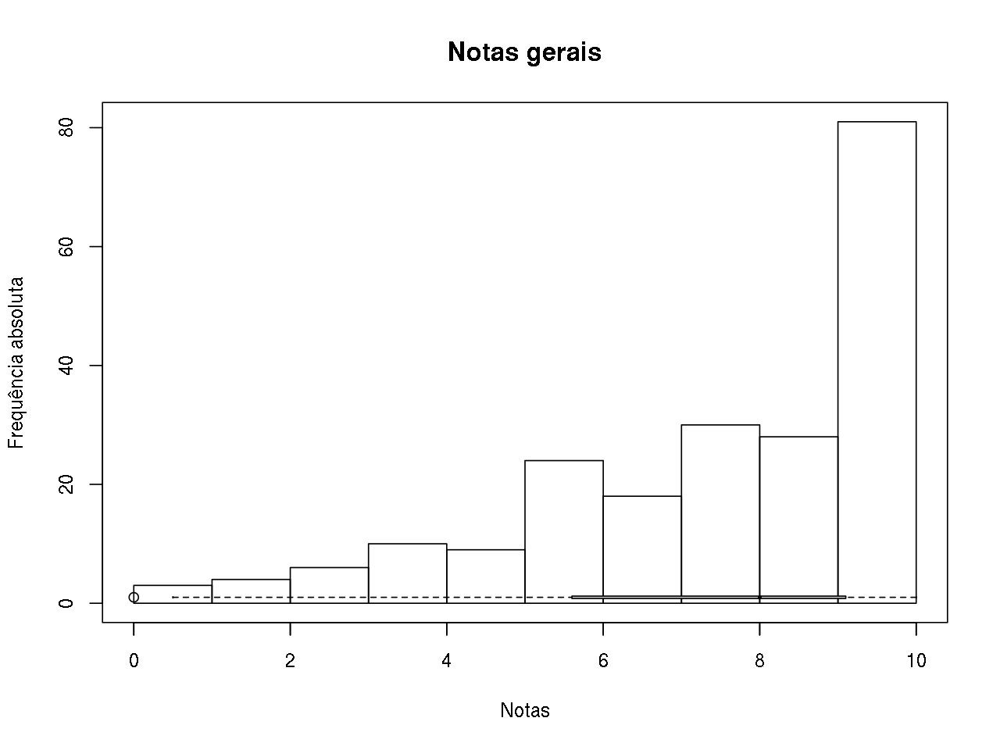

Notas
Histograma e box plot geral
## Grafico geral das notas
breaks <- 0:10
## table(cut(notas$S1, breaks = breaks,
## right = FALSE, include.lowest = TRUE))
## Junta notas de todas as sabatinas em um único vetor
notas.all <- do.call(c, notas[, notas.col])
hist(notas.all, breaks = breaks, right = FALSE, include.lowest = TRUE,
main = "Notas gerais", xlab = "Notas", ylab = "Frequência absoluta")
boxplot(notas.all, horizontal = TRUE, ylim = c(0, 10),
col = "lightgray", add = TRUE)
Resumo dos cinco números, média, desvio-padrão, e número de provas não realizadas (NA):
statm <- function(x){
res <- c(fivenum(x),
mean(x, na.rm = TRUE),
sd(x, na.rm = TRUE),
sum(is.na(x)))
names(res) <- c("Min", "Q1", "Q2", "Q3", "Max", "Média", "s", "NAs")
return(res)
}
round(statm(notas.all), 2) Min Q1 Q2 Q3 Max Média s NAs
0.50 5.50 8.00 9.50 10.00 7.35 2.46 18.00 Resumos por prova
Box plot de cada prova
## Boxplots comparando as notas entre sabatinas
boxplot(notas[, notas.col], ylim = c(0, 10), ylab = "Notas")
Resumo dos cinco números, média, desvio-padrão, e número de provas não realizadas (NA):
round(apply(notas[, notas.col], 2, statm), 2) S1 S2 S3 S4 S5
Min 4.50 2.50 1.80 0.50 1.00
Q1 8.50 5.90 5.75 3.50 7.00
Q2 9.00 8.10 8.20 5.00 9.00
Q3 9.50 9.80 9.90 7.50 9.65
Max 10.00 10.00 10.00 9.50 10.00
Média 8.74 7.44 7.70 5.19 7.71
s 1.21 2.39 2.20 2.41 2.44
NAs 3.00 3.00 4.00 3.00 5.00Notas individuais
kable(notas, align = c("c", "c"))| Matricula | S1 | S2 | S3 | S4 | S5 |
|---|---|---|---|---|---|
| 20124646 | 6.0 | 5.9 | 1.8 | 4.0 | 7.0 |
| 20124652 | NA | 5.3 | 2.9 | 0.5 | 7.0 |
| 20136720 | 9.5 | 9.8 | 9.9 | 5.0 | 9.0 |
| 20149073 | 8.0 | 7.0 | 8.0 | 3.0 | 8.0 |
| 20149110 | 7.3 | 8.1 | 7.0 | 5.5 | 7.0 |
| 20149145 | 7.5 | 2.5 | 5.3 | 5.5 | 9.0 |
| 20150149 | 4.5 | 2.5 | 6.7 | 0.5 | 6.0 |
| 20150417 | 9.0 | 10.0 | 10.0 | 8.0 | 10.0 |
| 20150452 | 8.7 | 3.0 | 5.5 | 5.0 | 9.0 |
| 20150470 | 8.5 | 6.0 | 6.0 | 3.0 | 1.0 |
| 20150836 | 9.0 | 10.0 | 10.0 | 8.0 | 10.0 |
| 20150978 | 9.8 | 9.8 | 10.0 | 7.5 | 10.0 |
| 20151292 | 9.5 | 7.0 | 8.9 | 1.5 | 6.0 |
| 20151516 | 9.0 | 10.0 | 9.9 | 5.0 | 9.5 |
| 20152147 | 7.5 | 6.5 | 5.3 | 4.5 | 7.0 |
| 20152591 | 9.0 | 9.5 | 8.4 | 7.5 | 10.0 |
| 20152736 | NA | NA | NA | NA | NA |
| 20152967 | NA | NA | NA | NA | NA |
| 20152988 | 8.5 | 9.8 | 7.0 | 7.5 | 10.0 |
| 20153016 | 9.8 | 10.0 | NA | 8.5 | 10.0 |
| 20153599 | 9.5 | 4.8 | 5.0 | 3.5 | NA |
| 20153646 | 10.0 | 6.8 | 7.3 | 4.8 | 9.8 |
| 20154101 | 9.7 | 9.5 | 10.0 | 7.0 | 9.0 |
| 20154112 | 8.5 | 4.0 | 7.5 | 3.5 | 7.0 |
| 20154179 | 9.5 | 9.5 | 9.9 | 7.0 | 9.0 |
| 20154443 | 10.0 | 8.0 | 9.0 | 9.0 | 8.0 |
| 20154966 | 10.0 | 9.8 | 10.0 | 9.5 | 10.0 |
| 20155156 | 6.0 | 5.5 | 8.9 | 5.0 | 2.0 |
| 20155208 | 9.0 | 3.5 | 9.0 | 2.5 | 7.0 |
| 20156753 | 9.8 | 9.8 | 8.5 | 8.0 | 10.0 |
| 20157092 | 9.0 | 9.1 | 5.0 | 3.0 | NA |
| 20157880 | 9.5 | 5.0 | 9.8 | 5.0 | 2.0 |
| 20158399 | 9.0 | 6.8 | 9.0 | 3.5 | 4.5 |
| 20159053 | 9.0 | 8.6 | 5.4 | 5.5 | 9.0 |
| 20159109 | 9.5 | 8.1 | 7.0 | 7.5 | 9.0 |
| 20159160 | 9.0 | 10.0 | 10.0 | 7.5 | 9.0 |
| 20159633 | 9.0 | 8.1 | 8.0 | 4.3 | 8.0 |
| 20159711 | 9.3 | 9.0 | 10.0 | 5.0 | 5.0 |
| 20159781 | 8.0 | NA | NA | NA | NA |
| 20159917 | 9.0 | 6.6 | 5.4 | 1.0 | 6.0 |

Este conteúdo está disponível por meio da Licença Creative Commons 4.0